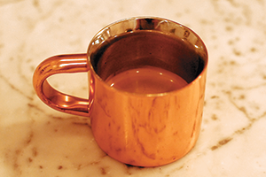
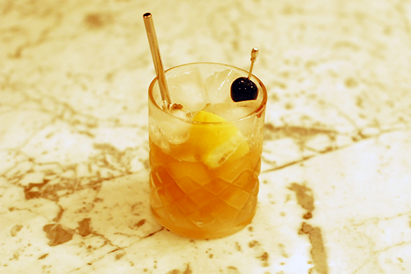
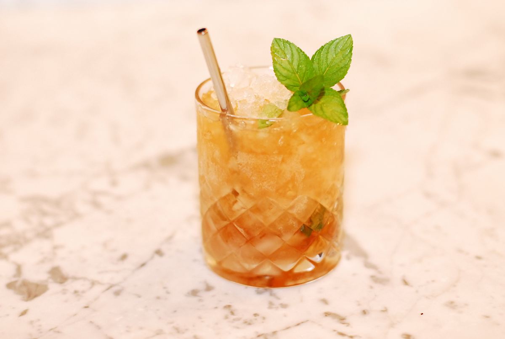
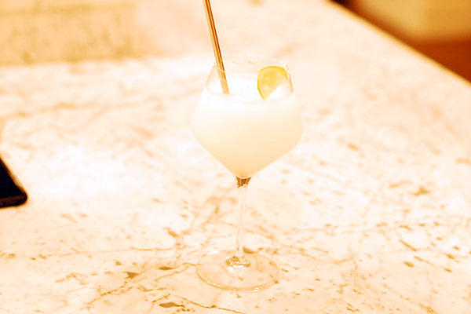
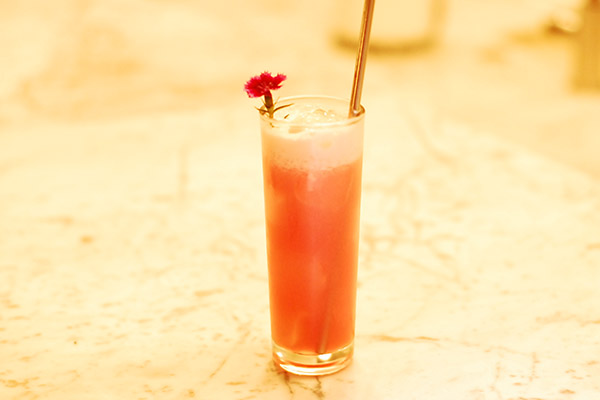

.
Coffee Drinks
Americano

2 Shots of espresso and hot water. Basically a black coffee that you can add cream & sugar to
Capaccino

Espresso & steamed milk with a lot of foam
Espresso

A straight shot, or two, of espresso and nothing else!
Flat White

One part of espresso to two parts of steamed milk with very little foam
Latte

One part espresso to three parts of steamed milk with fine microbubble foam
Macchiato

Equal parts espresso & steamed milk
Mocha Latte
A latte made with Ghirardelli dark chocolate
Sweet Shot

A double shot of espresso with Ghirardelli & Mexian Spiced chocolate
Mixed Drinks
Boulvevardier
Mixing glass
3/4 oz Sweet Vermouth
3/4 oz Campari
2 oz Bourbon
Cracked ice - stir
Julep strain into chilled coupe with ice or straight up
Orange twist
Grasshopper
 1 ounce green creme de menthe
1 ounce green creme de menthe
1 ounce white creme de cacao
2 ounces heavy cream
Garnish: nutmeg, mint leaf
Manhattan

Mixing glass
1 oz Sweet Vermouth
2 oz Rey Whisky
A few dashes of aomatic bitters
Broken ice
Luxaro cherry
Stir
Strain with julip into
coupe or vintage glass
Mint Julep
Mixer glass
15 leaves of mint
A lot of simple syrup
Muddle, not too much, spread around rocks glass
2.5 oz of high proof Bourbon
Add crushed ice
Swizzle lightly
Add straw and more ice
Add mint flourish
Add bitters and drizzle of Rum
Moscow Mule

Mix in chilled Mule mug
Fill with ice
1 oz fresh lime juice
2 oz Vodka
Top with Ginger Beer
Garnish: lime wedges, fresh min
Margarita

2 oz tequila
3/4 oz orange liqueur
1 oz lime juice
salt chilled rim
Garnish: lime wheel
Make on the rocks or frozen
For frozen use 1 cup of ice in blender
Old Fashioned

Mix in glass
1 sugar cube
Orange bitters
Splash of water
Muddle
Large ice cube
2 oz Bourbon
Garnish: cherry, orange peal
Optional: Candied orange slice, smoke
Pink Lady

1.5 oz gin
1/2 oz Apple Brand
3/4 oz lemon juice
1/4 oz Grenadine
1 egg white
Shake like crazy
Serve in tall class with pink flower
Wet Pussy #1
2 oz Baileys Irish Cream
1 oz Chambord Rasberry Liqueur
6 oz cream
Mix in shaker with ice
Serve in tall glass
Wet Pussy #2
1 oz Malibu
1 oz Watermellon Schnapps
Splace cranberry juice
Splace of pineapple juice
Mix in shaker with ice
Serve in tall glass
Red Wines
Tinazzi Valpolicella
Zenato Valpolicella Superiore

Menu